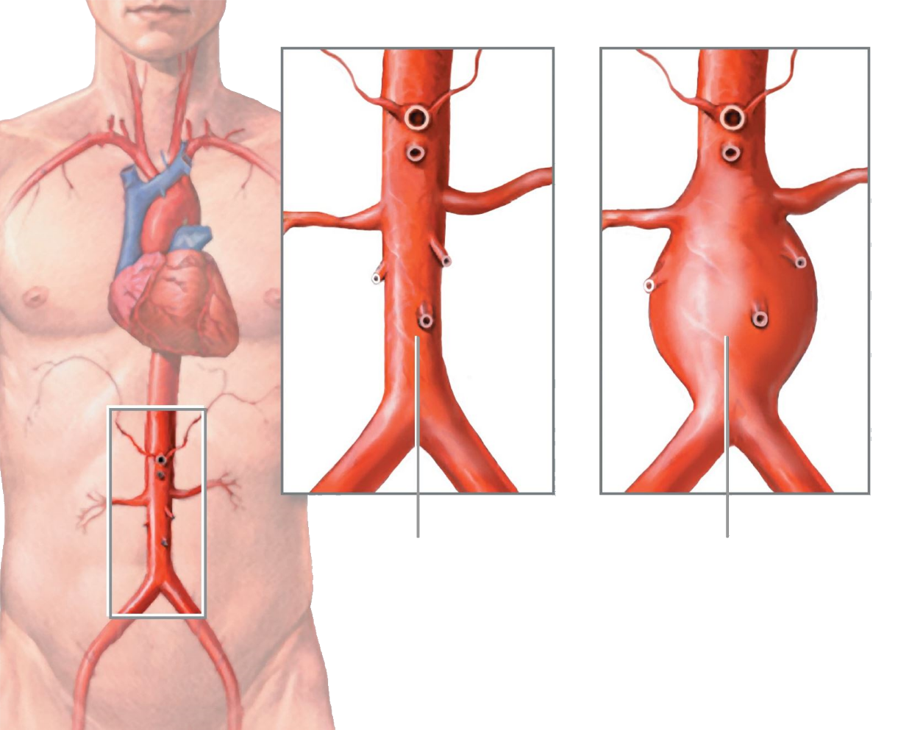
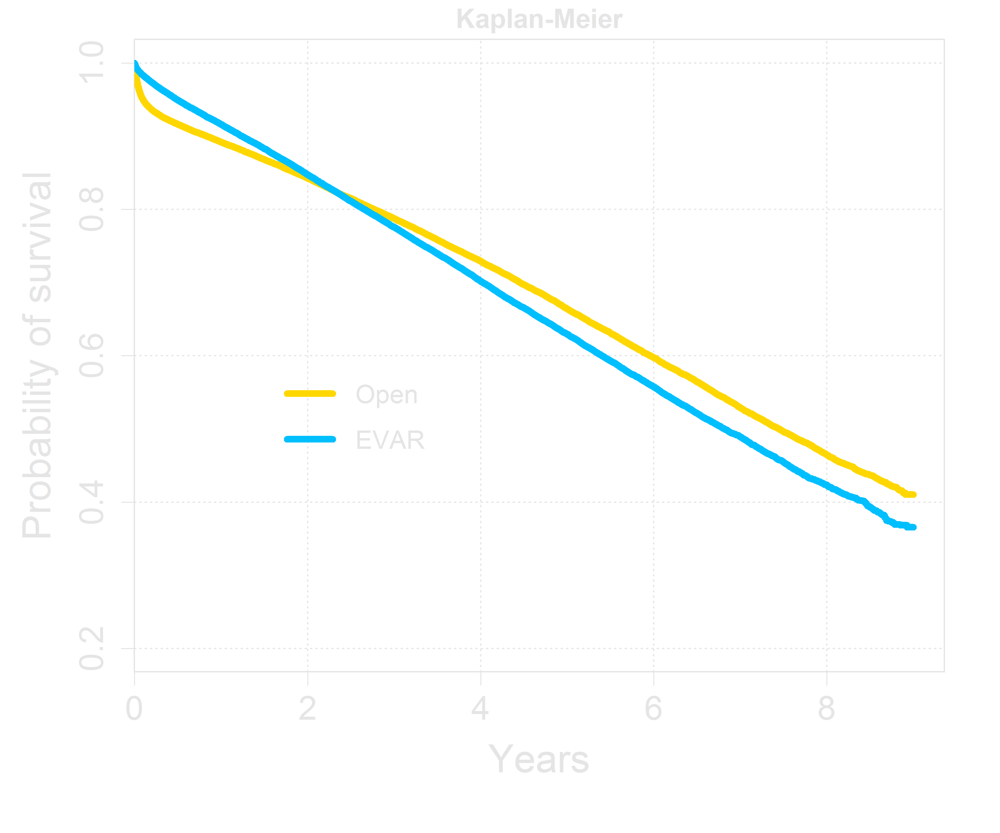
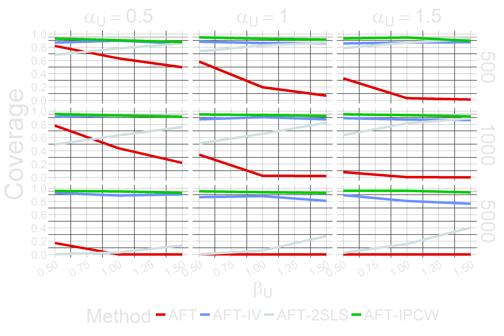

Endovascular vs. Open Surgery:
Analysis of Survival Outcomes Using
Instrumental Variables
Jared Huling
Joint work with Dr. Menggang Yu
and Dr. James O'Malley, Dartmouth
Biostatistics & Medical Informatics
University of Wisconsin
– Madison
Causal Inference In Observational Studies
- Randomized Controlled Trials
- Gold standard for causal inference
- Drawbacks
- Costly
- Impractical
- Often narrow in scope
- Need for causal inference from observational studies
Abdominal Aortic Aneurysm

- Dilation of large artery in abdominal cavity
- More common among elderly, especially men and smokers
- Life-threatening, due to increased chance of aortic rupture
- Standard Surgical Procedures
- High mortality associated with surgical repair in rupture cases
- Open Repair, conventional, more invasive, long recovery
- Endovascular Repair, more recent, less invasive
Previous Analysis
- Randomized Clinical Trials
- Suggest short term reduction in mortality for endo (Prinssen et al., 2004), little difference after 3 years (Lederle et al., 2012)
- Issues
- Short-term follow-up (Prinssen et al., 2004)
- Small One of the largest long-term controlled studies only had 10 AAA-related deaths (Lederle et al., 2012)
Previous Analysis

- Medicare Enrollment Data (observational)
- Lots of it — 128k patients with long-term follow-up
- ~44k deaths
- Propensity-score-matched cohorts (Schermerhorn et al., 2008)
- Potentially differential benefit for various subgroups
- Suggests older patients benefit more from EVAR
- Reinterventions more common after EVAR
- Issues
- Many unmeasured factors determine type of repair performed
Instrumental Variables
Can we estimate the causal effect of $X$ on $T$ without knowing $U$?
Consider the model $T = \beta X + U, \mbox{ where } U = (V, \epsilon)$.
so $\hat{\beta}_{OLS} = \beta + (X^TX)^{-1}X^TU$ is biased because $E(X^TU) \neq 0$
Instrumental Variables
Can we estimate the causal effect of $X$ on $T$ without knowing $U$?
Consider the model $T = \beta X + U, \mbox{ where } U = (V, \epsilon)$.
so $\hat{\beta}_{OLS} = \beta + (X^TX)^{-1}X^TU$ is biased because $E(X^TU) \neq 0$
Instrumental Variables
- Roughly speaking, we can write
$Association(Z, T) = Association(Z, X) \times Association(X, T)$
and solve for $Association(X, T)$ - In the simple linear model, $\hat{\beta}_{IV} = cov(T, Z) / cov(X, Z) \mbox{ is consistent for } \beta$
- (under some assumptions)
- We can think of the instrument $Z$ as an experimental handle
- Considering $X$ to be a treatment, when $Z$ is changed, the treatment status is changed
- Through and only through this change, the observed outcome $T$ is changed
Instrumental Variables in Linear Regression
- Assumptions
- model:
- $T = \beta X + U $
- where
- $Z\perp\!\!\!\perp U \mbox { and } X \not\!\perp\!\!\!\perp Z$
- and $T\perp\!\!\!\perp Z|X, U$
Instrumental Variables in Linear Regression
- Estimator
- $\hat{\beta}_{IV} = (Z'X)^{-1}Z'T$ is consistent whereas $\hat{\beta}_{OLS} \mbox{ is not}$
- Interpretation as Two-stage least squares:
- $\hat{\beta}_{2SLS} = (\hat{X}'\hat{X})^{-1}\hat{X}'T \mbox{, where } \hat{X} = Z(Z'Z)^{-1}Z'X$ is another consistent IV estimator
- Equivalent to regressing $X \mbox{ on } Z$ and then regressing $T \mbox{ on } \hat{X}$ from the first regression
- Challenges
- Traditional IV methods require linearity
- Parametric models are often too restrictive for survival data in medical settings
-
Methods that do not require linearity typically require other strong assumptions,
such as no measurement error for the endogenous variable $X$ - Some assumptions must be made
- In a completely nonparametric model, there are identifiability issues
- Existing work for IV methods for survival data
-
Most work relies on fully specified parametric structural equation models:
Tang and Lee (1998), Muthen and Masyn (2005), and Chen, et al (2011) - Two-stage residual inclusion (Terza et al., 2008) allows for consistent estimation for nonlinear parametric models with no censoring
- Recent has moved away from parametric outcome models, incorporating instrumental variable estimation in the Cox proportional hazards model (MacKenzie et al., 2014) and the additive hazards model (Li et al., 2015; Tchetgen Tchetgen et al., 2015) which alleviates some of the restrictions of fully parametric approaches
- However, they all impose a structural model for the confounding mechanism or parametric assumptions on the IV model
- Existing work for IV methods for survival data
-
Most work relies on fully specified parametric structural equation models:
Tang and Lee (1998), Muthen and Masyn (2005), and Chen, et al (2011) - Two-stage residual inclusion (Terza et al., 2008) allows for consistent estimation for nonlinear parametric models with no censoring
- Recent has moved away from parametric outcome models, incorporating instrumental variable estimation in the Cox proportional hazards model (MacKenzie et al., 2014) and the additive hazards model (Li et al., 2015; Tchetgen Tchetgen et al., 2015) which alleviates some of the restrictions of fully parametric approaches
- However, they all impose a structural model for the confounding mechanism or parametric assumptions on the IV model
-
$\log \widetilde{T}_i = \beta X_i + \epsilon_i$, $i=1,\dots,n \mbox{ where }\epsilon_i$ come from a common, unspecified distribution and $\epsilon_i \perp\!\!\!\perp (X_i, C_i)$
Let $C_i$ be the censoring time for subject $i$, where $C_i \perp\!\!\!\perp \widetilde{T}_i | X_i$
We observe $(T_i, \Delta_i, X_i), \mbox{ where } T_i = \widetilde{T}_i \wedge C_i \mbox{ and } \Delta_i = I(\widetilde{T}_i \leq C_i) $ - Nice interpretation: $\log$ of the survival time is linear in the covariates
- Linearity provides opportunity for use of IVs
- Computational Challenges
- $\Psi_n(\beta)$ is neither continuous nor monotone
- Continuous approximations to $\Psi_n(\beta)$
- To ensure monotonicity, let $\rho(t, \beta) = \frac{1}{n}\sum_{j=1}^n I(\epsilon_j^\beta \ge t)$ (Gehan weighting)
- The underlying model is:
$\log \widetilde{T}_i = \beta X_i + U_i$,
$i=1,\dots,n$
- where
- $Z_i\perp\!\!\!\perp U_i$
- $\widetilde{T}_i\perp\!\!\!\perp Z_i|X_i, U_i$
- $X_i \not\!\perp\!\!\!\perp Z_i$
- A key difference from standard AFT assumptions:
- $C_i\perp\!\!\!\perp (X_i, Z_i, U_i, \widetilde{T}_i)$
- Utilization of the $\texttt{R}$ package $\texttt{BB}$
-
$\texttt{BB}$ is a derivative-free method for solving nonlinear systems of equations
- Works well for non-smooth systems of equations
- $\texttt{BB}$ doesn't always find the solution, so an adaptive restarting strategy is used, which makes solving more robust
-
Full bootstrap: solve $n^{-1/2}\Psi_n^{IV-IPCW^*}(\beta)$ $\mbox{ }B$ times, where
$n^{-1/2}\Psi_n^{IV-IPCW^*}(\beta)$
is the estimating equation based on resampled data -
However, due to the computational difficulties in solving $n^{-1/2}\Psi_n^{IV-IPCW}(\beta)$,
this is impractical -
Instead, if we can relate the variance of $n^{-1/2}\Psi_n^{IV-IPCW}(\beta)$ to the variance of
$n^{1/2}(\hat{\beta} - \beta_0)$, a greatly less computationally demanding procedure can be developed - This motivates the use of resampling strategies from Zeng and Lin (2008)
- Instead of solving estimating equations, involves evaluating perturbed equations
- Can accomodate nonsmooth estimating equations/functions
- For the standard AFT model, under some regularity conditions (Parzen et al. 1994, Zeng and Lin 2008):
-
Uniformly in a neighborhood of $\beta_0$,
$n^{-1/2}\Psi_n(\beta) = n^{-1/2}\sum_{i=1}^n S_i(\beta_0) + A n^{1/2}(\beta - \beta_0) + o_p(1+n^{1/2}||\beta - \beta_0||)$
where $A$ is the asymptotic slope of $\frac{1}{n}\Psi_n(\beta_0)$ - Hence, $n^{1/2}(\hat{\beta} - \beta_0)$ is asymptotically norm with variance $\Sigma = A^{-1}V(A^{-1})^T$, where $V = \lim_{n \to \infty}\frac{1}{n}\sum_{i=1}^nS_i S_i^T$
- Zeng and Lin (2008) proposed to estimate $A$ by regressing the following perturbation $n^{-1/2}\Psi_n(\hat{\beta} + n^{-1/2}Z_b),\mbox{ }Z_b \sim N(0,1)$ on $Z_b, b=1,\dots,B$ and to estimate $V$ by taking the sample variance of $B$ resampled equations $n^{-1/2}\Psi_n^{*}(\hat{\beta})$
- From Theorem 2 we have \begin{align*} n^{-1/2}\Psi_n^{IV-IPCW}(\beta) = {} & \dot{\Psi}_{\gamma} ( n^{1/2} (\hat{\gamma}_n - \gamma_0) ) + n^{-1/2}\sum_{i=1}^nS_i(\beta_0) \\ &{} + An^{1/2}(\beta - \beta_0) + o_p(1 + n^{1/2}||\beta - \beta_0 ||) \\ \end{align*}
- And hence the bootstrap method applies
- Data
- Rupture cases (2853 patients)
- ~66% censoring
- 9 years of follow-up
- 962 deaths, 733 of which were related to endo repair
- Instrument: the proportion of endovascular AAA surgeries by institution in the past 365 days
- Standard methods to determine instrument strength support the use of this as an instrument
- Methods
- Standard AFT model, AFT model with IV replacement, AFT-2SLS, AFT-IV-IPCW
- Bootstrap for confidence intervals
- AAA Rupture Data
- Standard AFT model (no IV adjustment) suggests slight benefit from endo
- AFT-IV / 2SLS /IPCW models suggest potential benefit from open surgery
- Interactions between the surgery type and patient characteristics
- IV Estimation in the AFT model
- Standard AFT model exhibits clear bias in the presence of confounding
- AFT-IV is not consistent, but in practice is much better than AFT
- IPCW provides a theoretically sound IV method
Instrumental Variables in Survival Analysis
Instrumental Variables in Survival Analysis
Instrumental Variables in Survival Analysis
Review: Accelerated Failure Time Model
Simulation from log-normal AFT Model with Crossing
Review: AFT Model Estimation
Rank-based Estimation of $\beta$ \begin{align*} \Psi_n(\beta) &= \sum_{i = 1}^n\int \rho(t, \beta)\{ X_i - \overline{X}(t, \beta) \} \mbox{ } \mathrm{d}N_i(t; \beta) \\ & \\ \mbox{where } \overline{X}(t, \beta) &\equiv \frac{1}{n}\sum_{j=1}^n X_j I(\epsilon_i^\beta \ge t) \mbox{ } / \mbox{ } \frac{1}{n}\sum_{i=1}^n I(\epsilon_i^\beta \ge t) \mbox{ and} \\ & \\ \epsilon_i^\beta &= \log{T_i} - \beta X_i \mbox{ is the residual for subject }i \\ \mbox{ and } N_i(t; \beta) &= I(\epsilon_i^\beta \leq t, \Delta_i = 1) \end{align*}
$\hat{\beta}$ is the zero crossing of $\Psi_n(\beta)$. Its asymptotic normality was proved by Tsiatis (1990) and Ying (1993)
Review: AFT Model Estimation
Rank-based Estimation of $\beta$ \begin{align*} \Psi_n(\beta) &= \sum_{i = 1}^n\int \rho(t, \beta)\{ X_i - \overline{X}(t, \beta) \} \mbox{ } \mathrm{d}N_i(t; \beta) \\ & \end{align*}
AFT Estimating Equation
Assumptions for IVs in the Accelerated Failure Time Model
Methods for Unmeasured Confounders - possible estimator of $\beta$
In the spirit of IV, replace $X$ with ${\color{Yellow}Z}$ \begin{align*} \Psi_n^{IV}(\beta) &= \sum_{i = 1}^n\int \rho(t, \beta)\{ {\color{Yellow}Z_i} - {\color{Yellow}\overline{Z}(t, \beta)} \} \mbox{ } \mathrm{d}N_i(t; \beta) \\ & \\ \mbox{where } {\color{Yellow}\overline{Z}(t, \beta)} &\equiv \frac{1}{n}\sum_{j=1}^n {\color{Yellow}Z_j} I(\epsilon_i^\beta \ge t) \mbox{ } / \mbox{ } \frac{1}{n}\sum_{i=1}^n I(\epsilon_i^\beta \ge t) \mbox{ and} \\ & \\ \epsilon_i^\beta &= \log{T_i} - \beta {\color{Yellow}X_i} \mbox{ is the residual for subject }i \mbox{ and } N_i(t; \beta) = I(\epsilon_i^\beta \leq t, \Delta_i = 1) \end{align*}
We compare ${\color{Yellow}Z_i} \mbox{ with } {\color{Yellow}\overline{Z}(t, \beta)}$, the mean IV value for those in the risk set for $i$
Methods for Unmeasured Confounders - possible estimator of $\beta$
However, in \begin{align*} \Psi_n^{IV}(\beta) &= \sum_{i = 1}^n\int \rho(t, \beta)\{ {\color{Yellow}Z_i} - {\color{Yellow}\overline{Z}(t, \beta)} \} \mbox{ } \mathrm{d}N_i(t; \beta) \\ & \mbox{ } \\ \epsilon_i^\beta &= \log{T_i} - \beta {\color{Yellow}X_i} \mbox{ depends on } {\color{Yellow} C_i} \end{align*}
and thus this estimator is not consistent for $\beta$
Methods for Unmeasured Confounders - possible estimator of $\beta$
In the spirit of 2SLS, replace $X$ with ${\color{Yellow}\hat{X}} = Z(Z'Z)^{-1}Z'X$ \begin{align*} \Psi_n^{2SLS}(\beta) &= \sum_{i = 1}^n\int \rho(t, \beta)\{ {\color{Yellow}\hat{X}_i} - {\color{Yellow}{\tilde{X}}(t, \beta)} \} \mbox{ } \mathrm{d}N_i(t; \beta) \\ & \\ \mbox{where } {\color{Yellow}{\tilde{X}}(t, \beta)} &\equiv \frac{1}{n}\sum_{j=1}^n {\color{Yellow}\hat{X}_j} I({\color{Yellow}\hat{\epsilon}_i^\beta} \ge t) \mbox{ } / \mbox{ } \frac{1}{n}\sum_{i=1}^n I( {\color{Yellow}\hat{\epsilon}_i^\beta} \ge t) \mbox{ and} \\ & \\ {\color{Yellow}\hat{\epsilon}_i^\beta} &= \log{T_i} - \beta {\color{Yellow}\hat{X}_i} \mbox{ is the residual for subject }i \mbox{ and } N_i(t; \beta) = I({\color{Yellow}\hat{\epsilon}_i^\beta} \leq t, \Delta_i = 1) \end{align*}
However this still imposes a linear
assumption on the effect of the IV on $X$
IV Estimation in the Accelerated Failure Time Model
Replacing $X$ with $Z$ causes censoring to become non-ignorable
A natural method for handling this is inverse probability-of-censoring weighting \begin{align*} \Psi_n^{IV-IPCW}(\beta) &= \sum_{i = 1}^n\int \rho(t, \beta)\{ {\color{Yellow}Z_i} - {\color{Yellow}\overline{Z}_{\hat{G}_C}(t, \beta)} \} \frac{\mathrm{d}N_i(t; \beta)}{\hat{G}_C(t + \beta X_i)} \\ & \\ \mbox{where } {\color{Yellow}\overline{Z}_{\hat{G}_C}(t, \beta)} &\equiv \frac{1}{n}\sum_{j=1}^n \frac{{\color{Yellow}Z_j} I({\color{Yellow}\epsilon_i^\beta} \ge t)}{\hat{G}_C(t + \beta X_j)} \mbox{ } / \mbox{ } \frac{1}{n}\sum_{i=1}^n \frac{I( {\color{Yellow}\epsilon_i^\beta} \ge t)}{\hat{G}_C(t + \beta X_j)} \mbox{ and} \\ & \\ {\color{Yellow}\epsilon_i^\beta} &= \log{T_i} - \beta {\color{Yellow}X_i} \mbox{ is the residual for subject }i \\ \mbox{ and } N_i(t; \beta) &= I({\color{Yellow}\epsilon_i^\beta} \leq t, \Delta_i = 1)\\ \mbox{and } \hat{G}_C & \mbox{ is the Kaplan-Meier estimator of } G_C\mbox{, the survival function of } C \end{align*}
Asymptotic Theory for IVs in the Accelerated Failure Time Model
Theorem 1 Assume regularity conditions hold and ${\rho}_n(t, \beta)$ and $\overline{Z}_{\hat{G}_C}(t, \beta)$ in $\Psi_n^{IV-IPCW}(\beta)$ belong to Glivenko-Cantelli classes. Then an approximate root $\hat{\beta}_n$ satisfying
\begin{align*} \Psi_n^{IV-IPCW}({\hat{\beta}_n}) = o_{p*}(1) \end{align*}
is consistent. In particular when ${\rho}_{\hat{G}_C, n}(t,\beta) = \frac{1}{n}\sum_{i=1}^n \frac{I( {\epsilon_i^\beta} \ge t)}{\hat{G}_C(t + \beta X_j)}$ for the Gehan type of weight, the resulting estimator is consistent.
Asymptotic Theory for IVs in the Accelerated Failure Time Model
Theorem 2 Denote $\hat{\gamma}_n = \hat{G}_C^{-1} \mbox{, } \gamma_0 = G_C^{-1}$ and let $\hat{\beta}_n$ be an approximate
root satisfying
\begin{align*} \Psi_{\hat{\gamma}_n, n}^{IV-IPCW}(\hat{\beta}_n) = o_{p^*}(n^{-1/2}). \end{align*} Then under the regularity conditions, $n^{1/2}(\hat{\beta}_n - \beta_0)$ is asymptotically normal with the
asymptotic representation
\begin{align*} n^{1/2}( \hat{\beta}_n - \beta_0 ) = n^{1/2}( \widetilde{\beta}_n - \beta_0 ) - \{ \dot{\Psi}_\beta (\beta_0) \}^{-1} \dot{\Psi}_{\gamma} ( n^{1/2} (\hat{\gamma}_n - \gamma_0) ) + o_{p^*}(1) \end{align*} where $\widetilde{\beta}_n$ is an approximate root satisfying \begin{align*} \Psi_{\gamma_0, n}^{IV-IPCW}(\widetilde{\beta}_n) = o_{p^*}(n^{-1/2}). \end{align*}
Computation for IVs in the Accelerated Failure Time Model
Computation for IVs in the Accelerated Failure Time Model
Computation for IVs in the Accelerated Failure Time Model
Computation for IVs in the Accelerated Failure Time Model
Inference for IV Estimation in the AFT Model
Standard AFT - Inference
Inference for IV Estimation in the AFT Model
Simulation $\widetilde{T} = \exp{\{ \beta X + \beta_U U + \epsilon \}}$ where $X = \alpha_Z \exp{\{Z\}} + \alpha_U U + \epsilon^* $ and $\epsilon$, $\epsilon^* \sim N(0,1)$, $\epsilon \perp\!\!\!\perp \epsilon^*$
100
$\alpha_U = $
$Cor(U,X)=$
$\beta_U = $
$Cor(U,{T})=$
$\alpha_Z = $
$Cor(Z,X)=$
Coverage $\widetilde{T} = \exp{\{ \beta X + \beta_U U + \epsilon \}}$ where $X = \alpha_Z \exp{\{Z\}} + \alpha_U U + \epsilon^* $
Coverage (Zooming In) $\widetilde{T} = \exp{\{ \beta X + \beta_U U + \epsilon \}}$ where $X = \alpha_Z \exp{\{Z\}} + \alpha_U U + \epsilon^* $

Preliminary Analysis
Kaplan-Meier Curves for All Patients
Kaplan-Meier Curves for Rupture Cases
Preliminary Analysis
Estimate of the effect of endovascular repair (EVAR)
on log survival time
accounting for prior conditions, demographic variables, and others
$ \begin{array}{c|rrl} {\text{Estimator}} & {\hat{\boldsymbol\beta}_{EVAR}} & {(95\% \text{ Conf.}} & {\text{Interval})} \\ \hline \text{AFT} & 0.047 & (-0.063, & 0.144) \\ \text{AFT-IV} & -0.169 & (-0.420, & 0.080) \\ \text{AFT-2SLS} & -0.175 & (-0.432, & 0.074) \\ \text{AFT-IV-IPCW} & -0.156 & (-0.364, & 0.052) \\ \end{array} $
Conclusions
/